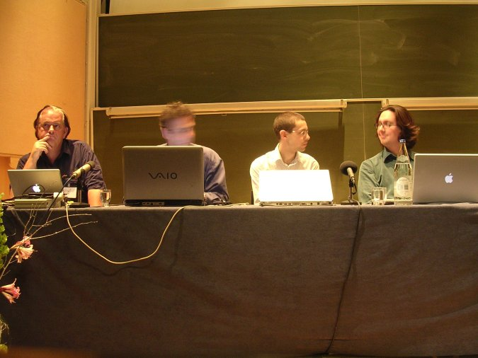
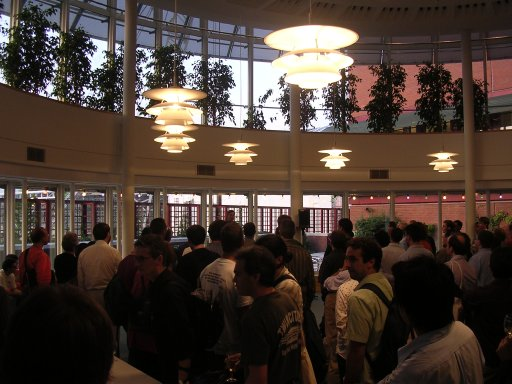

ISMIR - Day two
Lots of good talks today, some great posters, an excellent panel
session and a reception at the British library. An excellent day at
ISMIR! Some interesting links encountered:
- Variations 2 The Indiana University Digital Music Libarary.
- NIME New Interfaces for Musical Expression
- The Music Animation Machine
- A Survey of Music Information Retrieval Systems
- Laboratory for the recognition and organization of speech and audio
- Sampling History - A rather cool animation showing when music sampling started to become common.
- BBCut2 a SuperCollider extensions library that suports bbcut2 supports beat tracking of audio streams and the scheduling follows induced clocks. There is an event analysis component which can construct a database of tagged events in an audio stream on-the-fly or as an NRT process.
- The Continuator The Continuator project involves a real time interaction with a system that learns musical styles. With the Continuator, users can play music as they wish, and the system will automatically engage in a dialogue by producing musical phrases designed as continuations of user input.
- Popular music browser
- Plunderphonics Sampling, mash-ups, cut-ups and more.
- Folksonomy Social tagging.
- The Illustrious Company Music soundscapes or exhibitions
- The British Library
- The Semantic Grid
The Panel Session
The panel session discussion for the day was all about things that can be done or will be done with MIR. Lots of forward thinking stuff, lots of new ideas. THe highlight of the day. British Museum
The evening reception at the British Library offered wine and a tour of the BL Treasures. Very Nice. I'm going to have to keep this update short, since it is time to head into ISMIR day 3. I'm giving a poster session today on our Artist Identification submission to MIREX. If you are reading this and attending ISMIR, drop by and say 'hi'.